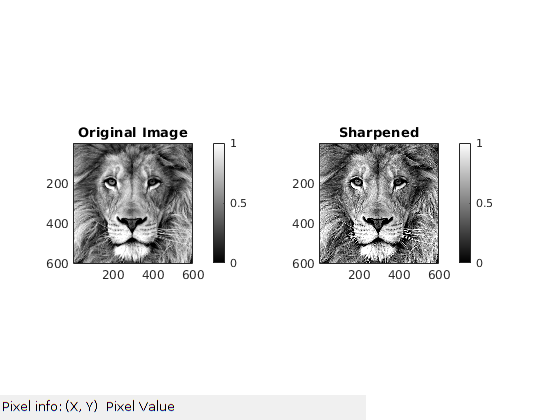
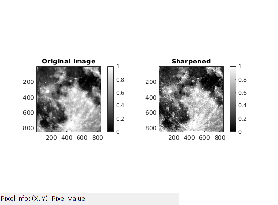

Contents
MyMainScript
my_num_of_colors = 256;
col_scale = [0:1/(my_num_of_colors-1):1]';
my_color_scale = [col_scale,col_scale,col_scale];
to_save = 0;
moon_data = load('../data/superMoonCrop.mat');
lion_data = load('../data/lionCrop.mat');
moon_pic = moon_data.imageOrig;
lion_pic = lion_data.imageOrig;
tic;
Your code here
filter_sigma = 1;
filter_size = 9;
scale_factor = 5;
original_pic = lion_pic;
original_pic = imadjust(original_pic,stretchlim(original_pic),[0 1]);
modified_pic = myUnsharpMasking(original_pic,filter_size,filter_sigma,scale_factor);
modified_pic = imadjust(modified_pic,stretchlim(modified_pic),[0 1]);
savefig(my_color_scale,original_pic,modified_pic,'Sharpened','Part1_a.png',0,to_save);
filter_sigma = 3;
filter_size = 9;
scale_factor = 4;
original_pic = moon_pic;
original_pic = imadjust(original_pic,stretchlim(original_pic),[0 1]);
modified_pic = myUnsharpMasking(original_pic,filter_size,filter_sigma,scale_factor);
modified_pic = imadjust(modified_pic,stretchlim(modified_pic),[0 1]);
savefig(my_color_scale,original_pic,modified_pic,'Sharpened','Part1_b.png',0,to_save);
toc;
function [modified_pic] = myLinearContrastStretching(original_pic)
[h, w, num_chan] = size(original_pic);
modified_pic = zeros([h, w, num_chan]);
for i=1:num_chan
chan = original_pic(:,:,i);
max_val = max(chan(:))
min_val = min(chan(:))
modified_pic(:,:,i) = double(chan-min_val)./double(max_val-min_val);
end
end
function savefig(my_color_scale,original_pic,modified_pic,title_name,file_name,is_color,to_save)
if to_save==1
fig = figure('units','normalized','outerposition',[0 0 1 1]); colormap(my_color_scale);
else
fig = figure; colormap(my_color_scale);
end
if is_color == 1
colormap jet;
else
colormap(gray);
end
subplot(1,2,1), imagesc(original_pic), title('Original Image'), colorbar, daspect([1 1 1]), axis tight;
subplot(1,2,2), imagesc(modified_pic), title(title_name), colorbar, daspect([1 1 1]), axis tight;
impixelinfo();
if to_save == 1
saveas(fig,file_name),close(fig);
end
end
Parameters Used
For lionPic:
Filter sigma : 1, filter_size = 9, scale_factor = 5.
For moonPic:
Filter sigma : 3, filter_size = 9, scale_factor = 4.
Elapsed time is 0.716870 seconds.
 